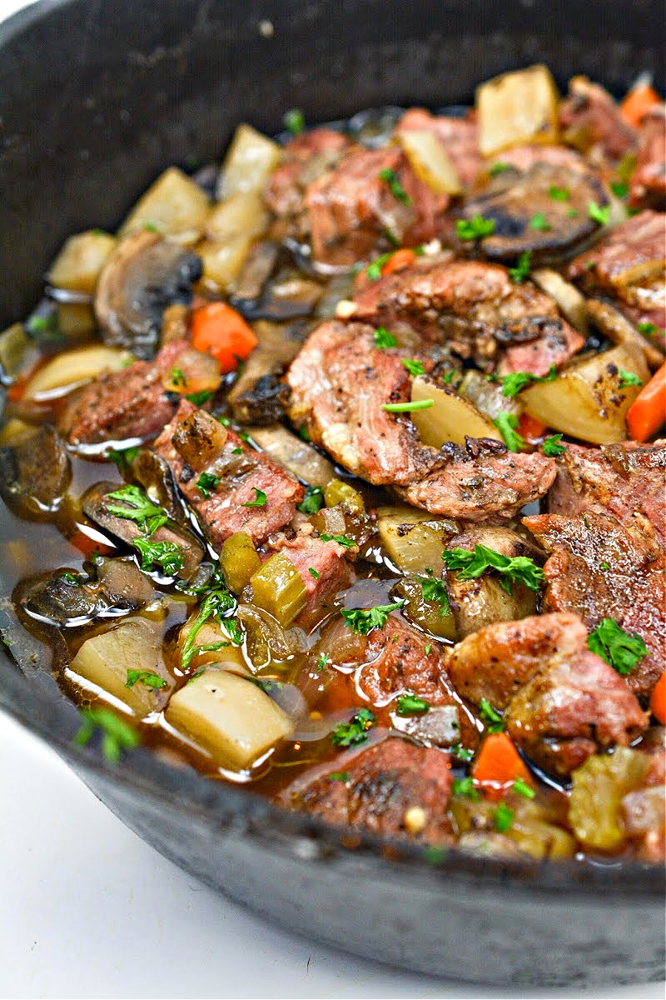

This is a recipe for a savory stew of pork meat and potatoes that will warm you inside and out. It's great with crusty bread or corn muffins for dipping into the stew and cleaning the bowls!
Heat olive oil in a large skillet over medium heat. Sprinkle pork on all sides with garlic powder, salt, and pepper, then lightly coat with cornstarch. Place pork in the skillet and cook in hot oil until lightly browned but not done.
Transfer pork to a slow cooker. Add potatoes, bell peppers, onion, and corn to pork in the slow cooker.
Mix together tomatoes, broth, condensed soup, milk, and Italian seasoning in a medium bowl until combined; pour into the slow cooker.
Cook on High for 1 hour. Reduce heat to Low and continue cooking for at least 1 more hour.